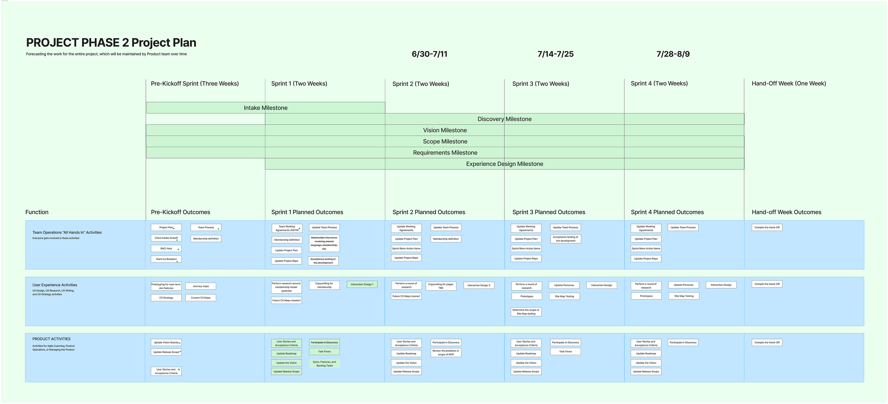
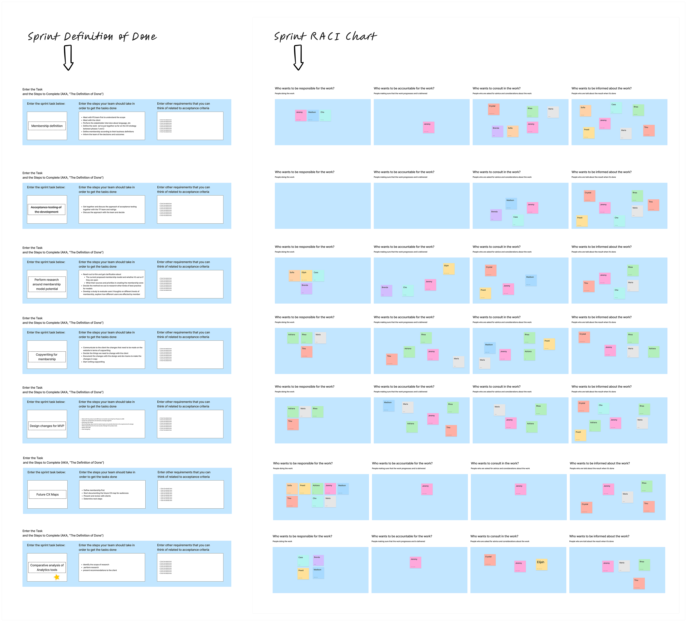
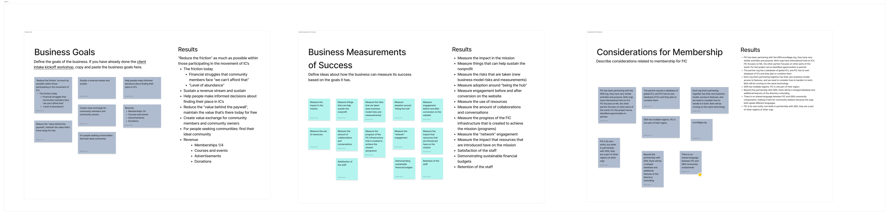
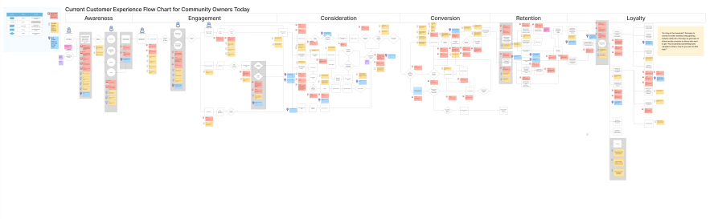
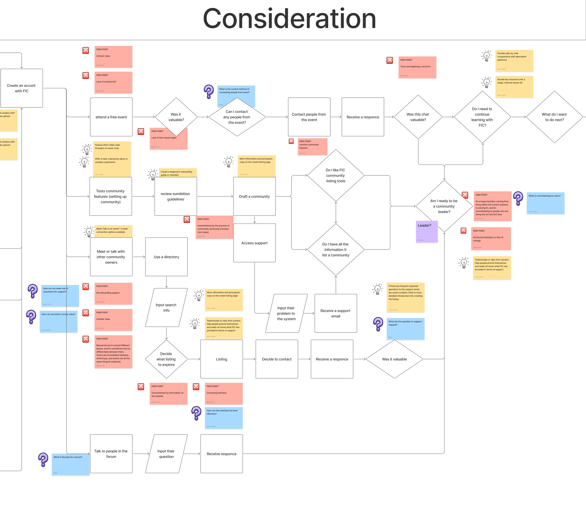
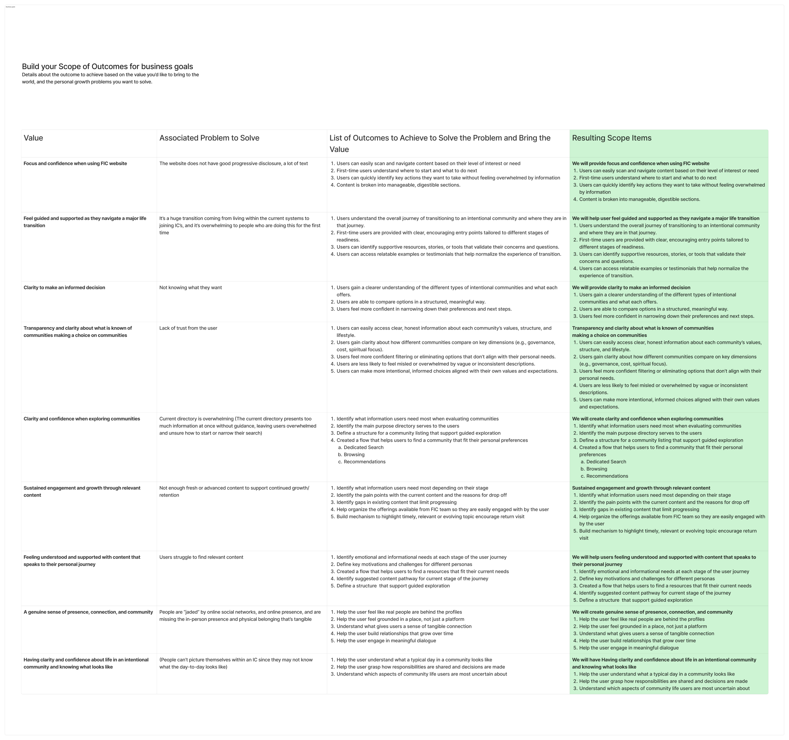

Foundation for Intentional Community
Tech Fleet · 16 Weeks · 2 week sprints · Product Strategy
About
This is a case study done through Tech Fleet. Tech Fleet is a nonprofit, community-driven organization that helps people break into tech by offering real-world apprenticeships. Participants work in Agile teams on projects, gaining hands-on experience in areas like UX, product strategy, and development. Projects involve real clients and work with external stakeholders and deliver work that has real-world impact.
Foundation for Intentional Community was the client for this case study. The Foundation for Intentional Community (FIC) has over 35 years of partnership with hundreds of intentional communities around the world. FIC defines an intentional community as a group of people who have chosen to live together or share resources on the basis of common values.
FIC offers the largest North American directory of intentional communities in the world. They help seekers find and connect to communities, while allowing owners to host their own. They also offer a number of services and products, including books, classes, and other free resources. FIC is a nonprofit and they put people infront of their business decisions, not profit.
Objective
- Define the problem space with the client by focusing on user needs, pain points, and business challenges.
- Translate business goals into design and research priorities.
- Use a Kanban board to visualize and translate project tasks and workflows to teams.
- Facilitate cross-team discussions to ensure shared understanding
- Establish ongoing feedback between stakeholders and teams.
- Track progress across design, research, and development teams.
Sprint structure
The project went for 4 sprints, that were 2 weeks long each, totaling 2 months. I partnered with FIC for a total of 4 months, 2 of which were pre-phase that invloved working soley with the clients defining their business objectives and strategy.

Product oporations were a large part of our work flow. A number of workshops were run bi-weekly to maintain a level of shared understanding and keep everyone moving in the same direction.

Throughout this phase I constantly worked with teams and clients to discuss the requirements of certain tasks. It was my job to take all of the details related to what needed to be done, why, for who, and how, and relay them to the teams so they could understand in full detail what they needed to do. These details were successful in that they rudeced the amount of work that needed to be done, and could rely someone like me (who is involved in all the stakeholder meetings) to accurately deliver the most important information consistently and on time. As a product strategist I took on many hats, which included the product owner and manager role. These instructions were in the forms of tickets that were associated to each task. Here are some examples of tickets I wrote:
Kanban Board
Client intake
The client intake was ran for 4 weeks, with meetings held once a week with the clients. The objective of the meetings was designed to understand how customers engage with their services at a business level. We worked with the clients to ask them questions related to their business, like what their goals were, their metrics of success, and how their business models relates to their competators. This was a highly open experience that prompted the clients to answer questions they hadn't have yet asked themselves. Their responses helped define the business and raise questions that could be looked further into. The main purpose was to focus on the customer and strategize a way to improve the membership conversion rate, while also tailoring an experience that is more attractive to the customer, which was to also improve retention, and then to finally create more opportunites for purchases.


The Customer Experience
The customer experience is a detailed look at how customers interact with the business. In this project I worked on developing a stronger understanding of how 2 targeted audiences (personas) engaged with the companies services (hosted mainly on their website). This was done by extensive work with the clients, defining the customer experience through the customer lifecycle, and building flows that showcase how personas interact with the journey.
The customer lifecyle funnel attempts to describe the customer as part of a journey. The funnel shown below shows the different stages a customer will experience as they engage with the business. It includes becoming aware of the business, which can be in many different ways. Each stage is cruciale in understanding how a customer will experience your business or product. How they become aware of it plays a large role in advertising and methods to gain attention, which could lead to more tailored experiences. There are other stages like engagement, which is how they first engage with the website. The next is consideration, which relates to the actions they take that makes them consider their servies. Then there is a point where they convert, and spend money. This is done after consideration, and once they know more about what they want, or will be getting. Then there is retention, which was used to strategize for prolonging an experience, rather than one time purchases, and create a space for users to consistenly use a product or service. Lastly there is loyaltly, which was strategized as a program to reward loyal customers. This process led to a more clear understand of customers, and led the way to strategize for a better experience.

I made journey tables for both personas, for our current experience and for the future experience (for the new website). This was for the user personas: community owners (FIC host communities on their website), and community seekers (those looking for a community). In total I built 4 userflows for the customer lifecycle, detailing the experience. This included the steps they took during each phase, the audiences involved, common tasks, common pain points, their current audience sentiments, KPIs related to success of their engagement, and ideas to improve

Below is a section from current customer experience flow chart for community owners. The sticky notes represent in Red: pain point, Blue: questions, and Yellow: ideas. Each type of note corresponds the part of the flow. At each stage the customer will experience different parts of the website. As they engage they will encounter pain points along the way. There is always room for improvements, and it was our job to stratgize to identify and remove pain points. Our ideas were successful, and we accurately found pain points that were unseen. I presented the flows to the clients and recieved feeback on how to use these insights. The feedback was constructing and positive towards improving the customer experience.

I helped strategize for the MVP, giving direction to the scope of the business. In doing so we established high level goals while also defining our current model. By focusing on the use cases, we helped give direction to what features should be focused on first. This allowed the teams and clients to plan for the next levels of release.

I developed multiple areas of the business that eventually turned into actionable steps to make improvements. In order to do this we needed to define more about FIC. This included the target audience, FICs meaning and purpose, problems and opportunites, business goals, KPIs, costs that go into release, risks and barriers, and the Unique Value Proposition

After defining a large portion of the business, we used these insights to identify value to FIC, recognize thier current problems, come up with outcomes to solve, and then take actions towards solving those problems (including how). This helped the client identify based on the current state of their business, that there is value looking into certain areas.

Conclusion
Working with the Foundation for Intentional Community was a postive experience. I got to know all of the clients, and I got to spend a considerable amount of time strategizing with them. This lasted for 4 months. A lot of time was spent into the customer experience. Managing the teams tasks and backlog played a huge part of why we were able to get so much done. The teams were agile and the communication was constantly clear on what needed to be done. Working with the client was a success and we managed to help them define and build their new membership proposal. This effort took a lot of time, research, and meetings. I learned how to break down many different parts of a business and organize them, creating value for the client, and strategizing towards a better experience. Another thing I learned is that much of the experience is tailored towards targeted personas, or the most common users. This can be an effective strategy, but with the amount of time we had, we weren't able to fully stratigize for all of the personas. By bringing success to the clients, this was a rewarding process. Shortly after they redesigned many aspects of their website and implemented their new business model, tailoring their experiences to more understood users, and improving the purchase and membership conversion rate.